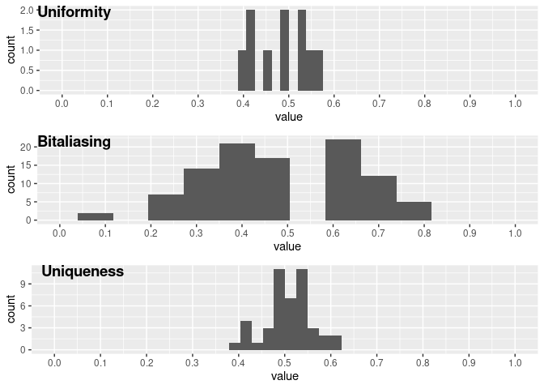
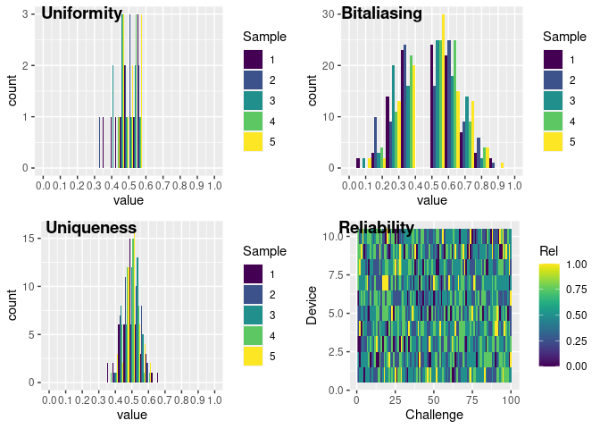

Overview
Physical Unclonable Functions, commonly knows as PUFs, are a mechanism that leverages the manufacture variability of devices to generate secrets. PUFs can be used to identify devices or to generate secrets. This package provides functions and algorithms for their analysis and evaluation. The functions provided in this package are optimised to be fast enough for most use cases.
A Python implementation can be found in Github.
You can learn more about PUFs and their evaluation in vignette("pufr").
Installation
You can install the development version of pufr from GitHub with:
# install.packages("devtools")
devtools::install_github("servinagrero/pufr")Basic functionality
PUFR provides functions and operators to work both with bit vectors (vectors containing 1s and 0s) and CRPs matrices (2D or 3D matrices with 1s and 0s).
library(pufr)
# rbits can be used to generate bits with desired probabilities
v1 <- rbits(50)
v2 <- rbits(50)
hamming_dist(v1, v2)
#> [1] 19
# Or alternatively
v1 %HD% v2
#> [1] 19
# Shannon entropy for bit vectors
entropy_bits(v1)
#> [1] 0.9895875Metrics
PUFR provides utilities to calculate the canonical metrics (uniformity, bitaliasing, uniqueness and reliability) of CRPs. They can be calculated using their respective functions.
# 5 devices with 10 challenges each
crps <- rbits(c(5, 10))
uniformity(crps)
#> [1] 0.5 0.5 0.4 0.6 0.4
bitaliasing(crps)
#> [1] 0.4 0.6 0.8 0.6 0.4 0.4 0.2 0.6 0.2 0.6
uniqueness(crps)
#> [1] 0.6 0.3 0.5 0.1 0.5 0.7 0.5 0.2 0.8 0.4
# For a 2D matrix, each column contains a sample
# In a 3D matrix, the 3rd dimension represents the samples
# 5 samples of 5 devices with 10 challenges each
crps <- rbits(c(5, 10, 5))
reliability(crps)
#> [,1] [,2] [,3] [,4] [,5] [,6] [,7] [,8] [,9] [,10]
#> [1,] 1.00 0.75 0.25 0.75 0.25 0.25 0.25 0.75 0.00 0.50
#> [2,] 0.75 0.75 0.25 0.50 1.00 0.50 0.50 0.75 0.25 0.25
#> [3,] 0.50 0.75 0.25 0.75 1.00 0.25 0.50 0.50 1.00 0.75
#> [4,] 0.25 0.50 0.25 0.75 0.25 0.50 0.50 0.50 0.75 0.25
#> [5,] 0.50 0.50 0.50 0.25 0.25 0.50 0.75 0.25 0.50 0.25All the metrics can be calculated at once by using the metrics function, which handles both 2D and 3D matrices.
Exploration of metrics
Metrics created through the metrics function can be plotted and summarised easily.
In the case of a 2D CRP matrix, 3 histograms are created, for uniformity, bitaliasing and uniqueness respectively.

In the case of a 3D CRP matrix, response samples are drawn from the 3rd dimension. The histograms are now grouped per sample and an additional raster plot is created to show the reliability of each independent response.
